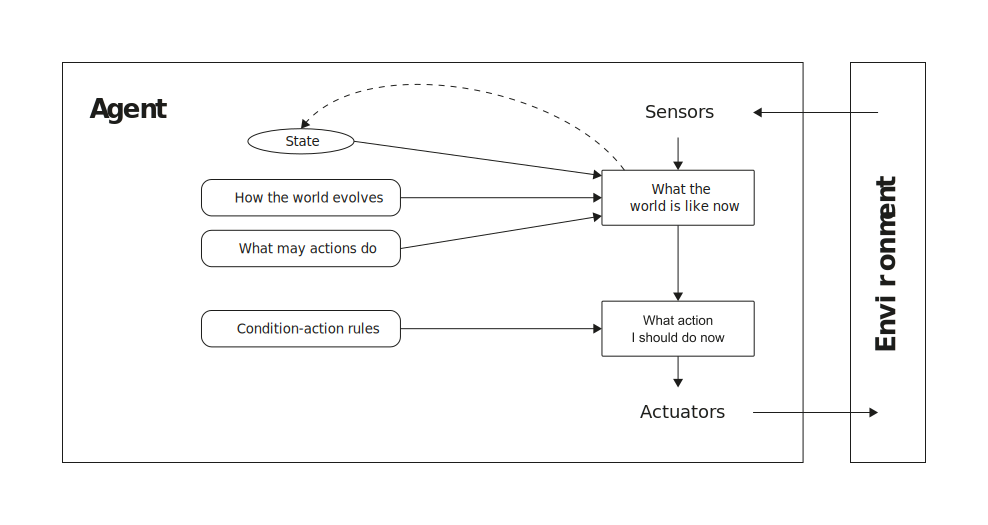
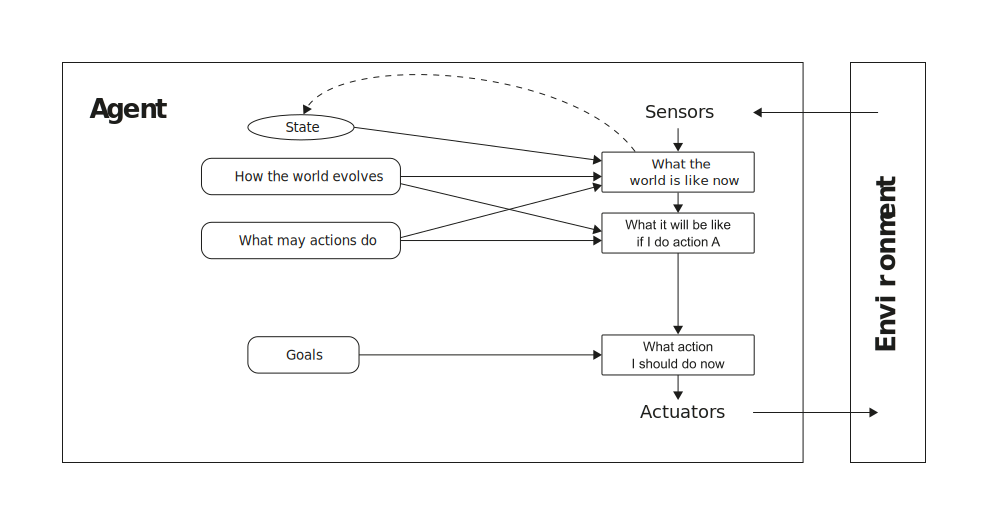

Intelligent agents
ü߆ I2AI_1 ‚Äî Introduction to AI
Andy Weeger
University of Applied Sciences Neu-Ulm
Agents
Agent

Rational agent
A rational agent is one that does the right thing.
For each possible percept sequence, a rational agent should select an action that is expected to maximize its performance measure, given the evidence provided by the percept sequence and whatever built-in knowledge the agent has (Russel and Norvig 2022, 58).
It can be quite hard to formulate a performance measure correctly, however:
If we use, to achieve our purposes, a mechanical agency with those operation we cannot interfere once we have started it […] we had better be quite sure that the purpose built into the machine is the purpose which we really desire (Wiener 1960, 1358)
Rationality
Rationality is not the same as perfection.
- Rationality maximizes expected performance
- Perfection maximizes actual performance
- Perfection requires omniscience
- Rational choice depends only on the percept sequence to date
Environments
Components
Before designing an agent (the solution), the task environment (the problem) must be specified as fully as possible, including
- the performance measure (P),
- the environment (E),
- the actuators (A), and
- the sensors (S)
Russel and Norvig (2022) call the task environment PEAS.
Properties
Task environments can be categorized along following dimensions (Russel and Norvig 2022, 62–64):
- Fully observable vs. partially observable
- Single agent vs. multi-agent
- Deterministic vs. nondeterministic
- Episodic vs. sequential
- Static vs. dynamic
- Discrete vs. continuous
The hardest case is partially observable, multi-agent, nondeterministic, sequential, dynamic, and continuous.
Agent types
Simple reflex agents

Model-based reflex agents

Goal-based agents

Utility-based agents

Learning agents

✏️ Exercises
I2AI_2 E1
Define in your own words the following terms:
- Agent
- Environment
- Sensor
- Actuator
- Percept
- Agent function
- Agent program
I2AI_2 E2
For each of the following agents, specify the sensors, actuators, and environment:
- Microwave oven
- Chess program
- Autonomous supply delivery
I2AI_2 E3
Describe a task environments in which the performance measure is easy to specify completely and correctly, and a in which it is not.
I2AI_2 E4
For each of the following assertions, say whether it is true or false and support your answer with examples or counterexamples where appropriate.
- An agent that senses only partial information about the state cannot be perfectly rational.
- There exist task environments in which no pure reflex agent can behave rationally.
- There exists a task environment in which every agent is rational.
- The input to an agent program is the same as the input to the agent function.
- Every agent is rational in an unobservable environment.
- There is a model-based reflex agent that can remember all of its percepts.
- Suppose agent A1 is rational and agent A2 is irrational. There exists a task environment where A2’s actual score will be greater than A1’s actual score.
I2AI_2 E5
For each of the following activities, give a PEAS description of the task environment and characterize it in terms of the properties discussed in class.
- Playing soccer.
- Exploring the subsurface oceans of Titan.
- Shopping for used AI books on the Internet.
- Playing a tennis match.
I2AI_2 E6
For each of the following task environment properties, rank the example task environments from most to least according to how well the environment satisfies the property.
Lay out any assumptions you make to reach your conclusions.
- Fully Observable: driving; document classification; tutoring a high-school student in calculus; skin cancer diagnosis from images
- Continuous: driving; spoken conversation; written conversation; climate engineering by stratospheric aerosol injection
- Stochastic: driving; sudoku; poker; soccer
- Static: chat room; checkers; tax planning; tennis
I2AI_2 E7
Define in your own words the following terms
- Rationality
- Autonomy
- Reflex agent,
- Model-based agent
- Goal-based agent
- Utility-based agent
- Learning agent